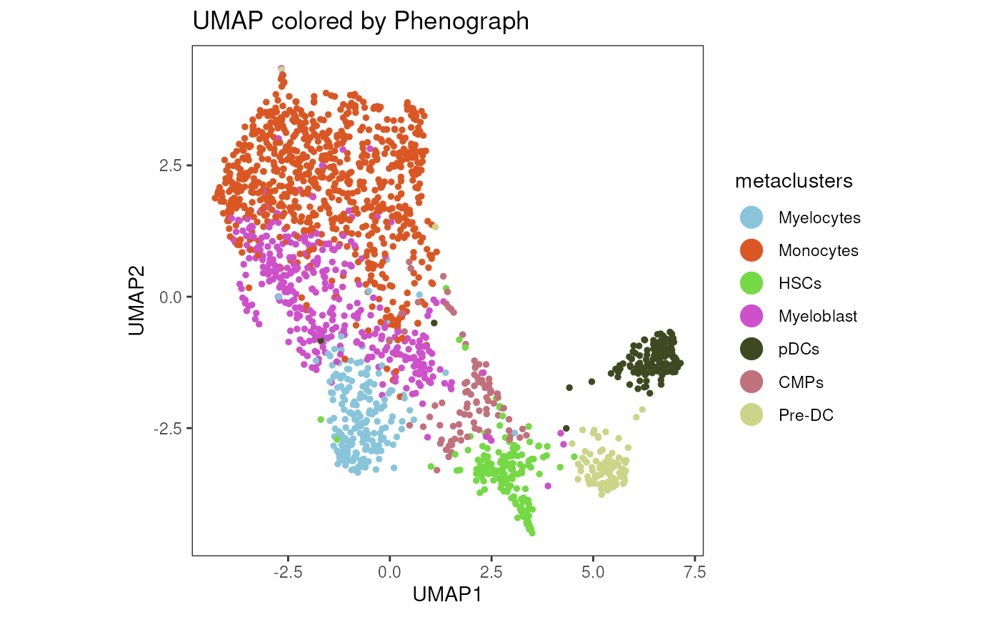
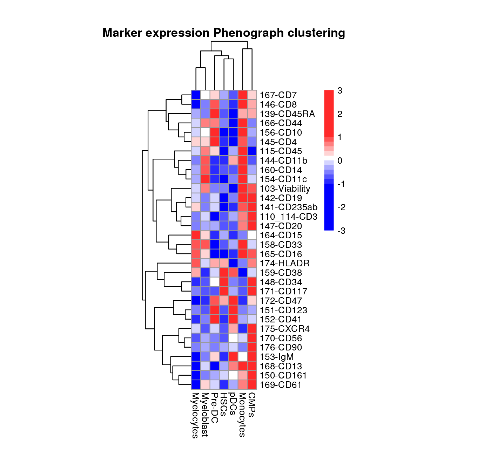
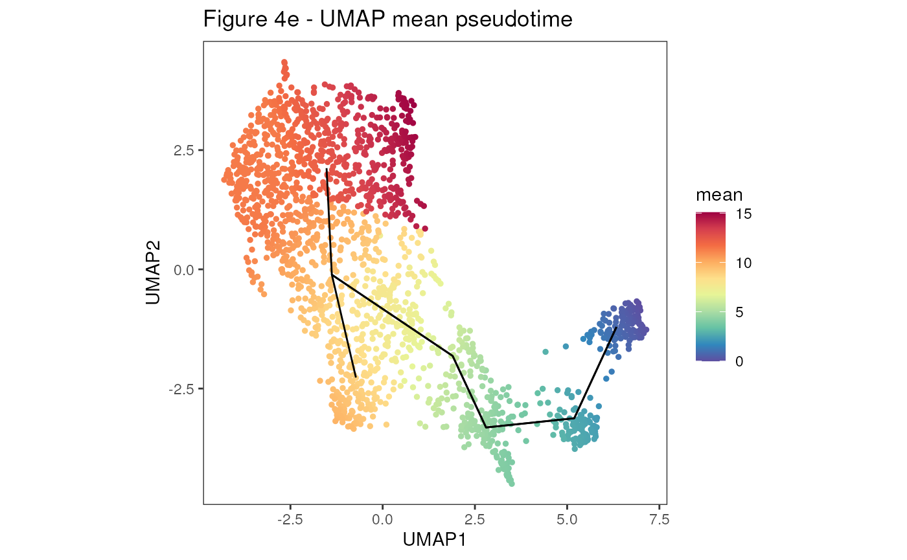
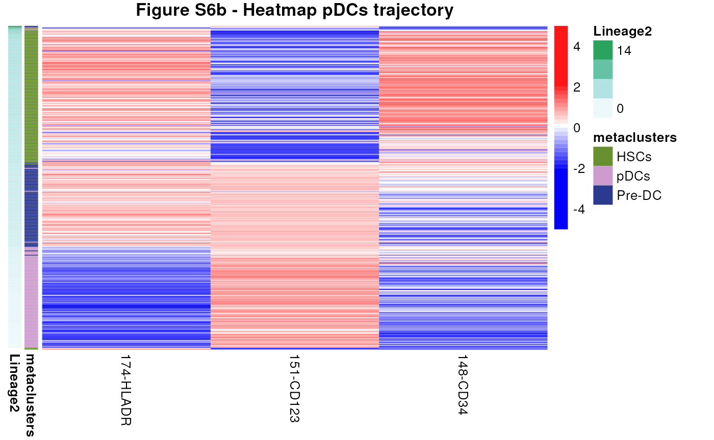

With cyCONDOR we implemented slingshot for
pseudotome analysis, following a workflow to calculate trajectories and
speudotime.
Load the cyCONDOR object
We start here by loading an example condor object
already annotated.
condor <- readRDS("../.test_files/condor_pseudotime.rds")
plot_marker(data = cbind(condor$umap$pca_orig, condor$anno$cell_anno, condor$clustering$Phenograph_filter_pca_orig_k_10),
param = "metaclusters",
order = T,
title = "Figure 4c - UMAP by Phenograph",
dim_red = "UMAP",
facet_by_variable = FALSE, dot_size = 1, apha = 1)
HM_markers(input = cbind(condor$expr$orig, condor$clustering$Phenograph_filter_pca_orig_k_10),
group = "Phenograph",
maxvalue = 2,
title = "Fig S5e - Marker expression Phenograph clustering",
cluster_rows = TRUE, cluster_cols = TRUE)
Pseudotime analysis
We can now calculate the pseudotime with different settings:
With no constrains on the stat of the trajectory
condor <- runPseudotime(fcd = condor,
dim_red_type = "umap",
dim_red_name = "pca_orig",
clustering = condor$clustering$Phenograph_filter_pca_orig_k_10$metaclusters,
approx_points = 5,
seed = 91)## [1] "Slingshot - getLineages"
## [1] "Slingshot - getCurves"With a specific starting cluster
condor <- runPseudotime(fcd = condor,
dim_red_type = "umap",
dim_red_name = "pca_orig",
clustering = condor$clustering$Phenograph_filter_pca_orig_k_10$metaclusters,
approx_points = 5,
start.clus = "CMPs",
seed = 91)## [1] "Slingshot - getLineages"
## [1] "Slingshot - getCurves"Testing all clusters as starting point
for (i in unique(condor$clustering$Phenograph_filter_pca_orig_k_10$metaclusters)[1:5]) {
condor <- runPseudotime(fcd = condor,
dim_red_type = "umap",
dim_red_name = "pca_orig",
clustering = condor$clustering$Phenograph_filter_pca_orig_k_10$metaclusters,
approx_points = 5,
start.clus = i,
seed = 91)
}## [1] "Slingshot - getLineages"
## [1] "Slingshot - getCurves"
## [1] "Slingshot - getLineages"
## [1] "Slingshot - getCurves"
## [1] "Slingshot - getLineages"
## [1] "Slingshot - getCurves"
## [1] "Slingshot - getLineages"
## [1] "Slingshot - getCurves"
## [1] "Slingshot - getLineages"
## [1] "Slingshot - getCurves"
plot_marker(data = cbind(condor$umap$pca_orig, condor$clustering$Phenograph_filter_pca_orig_k_10, condor$pseudotime$slingshot_umap_pca_orig),
param = "mean",
order = T,
title = "Figure 4e - UMAP mean pseudotime",
dim_red = "UMAP",
facet_by_variable = FALSE, dot_size = 1, apha = 1) +
geom_path(data = condor$extras$slingshot_umap_pca_orig$lineages %>% arrange(Order), aes(group = Lineage), size = 0.5)## Warning: Using `size` aesthetic for lines was deprecated in ggplot2 3.4.0.
## ℹ Please use `linewidth` instead.
## This warning is displayed once every 8 hours.
## Call `lifecycle::last_lifecycle_warnings()` to see where this warning was
## generated.
Heatmap visualization of trajectory
DCs
selections <- rownames(condor$clustering$Phenograph_filter_pca_orig_k_10[condor$clustering$Phenograph_filter_pca_orig_k_10$metaclusters %in% c("HSCs", "Pre-DC", "pDCs"), ])
condor_dcs <- filter_fcd(fcdataset = condor,
cell_ids = selections)
expression <- condor_dcs$expr$orig
anno <- cbind(condor_dcs$clustering$Phenograph_filter_pca_orig_k_10[, c("Phenograph", "metaclusters")], condor_dcs$pseudotime$slingshot_umap_pca_orig)
anno <- anno[order(anno$Lineage2, decreasing = TRUE),]
expression <- expression[rownames(anno), c("174-HLADR", "151-CD123", "148-CD34")]
my_colour = list(metaclusters = c(HSCs = "#689030", pDCs = "#CD9BCD", `Pre-DC` = "#2B3990"))
pheatmap(mat = expression,
scale = "column",
show_rownames = FALSE,
cluster_rows = F,
cluster_cols = F,
annotation_row = anno[, c("metaclusters", "Lineage2")],
annotation_colors = my_colour,
breaks = scaleColors(expression, maxvalue = 2)[["breaks"]],
color = scaleColors(expression, maxvalue = 2)[["color"]],
main = "Figure S6b - Heatmap pDCs trajectory")
Monocytes
selections <- rownames(condor$clustering$Phenograph_filter_pca_orig_k_10[condor$clustering$Phenograph_filter_pca_orig_k_10$metaclusters %in% c("HSCs", "CMPs", "Myeloblast", "Monocytes"), ])
condor_mono <- filter_fcd(fcdataset = condor,
cell_ids = selections)
expression <- condor_mono$expr$orig
anno <- cbind(condor_mono$clustering$Phenograph_filter_pca_orig_k_10[, c("Phenograph", "metaclusters")], condor_mono$pseudotime$slingshot_umap_pca_orig)
anno <- anno[order(anno$Lineage2, decreasing = FALSE),]
expression <- expression[rownames(anno), c("148-CD34", "160-CD14", "144-CD11b")]
my_colour = list(metaclusters = c(Monocytes = "#CBD588", HSCs = "#689030", Myeloblast = "#DA5724", CMPs = "#F7941D"))
pheatmap(mat = expression,
scale = "column",
show_rownames = FALSE,
cluster_rows = F,
cluster_cols = F,
annotation_row = anno[, c("metaclusters", "Lineage2")],
annotation_colors = my_colour,
breaks = scaleColors(expression, maxvalue = 2)[["breaks"]],
color = scaleColors(expression, maxvalue = 2)[["color"]], main = "Figure 4f - Heatmap Monocytes pseudotime")
Session Info
info <- sessionInfo()
info## R version 4.3.1 (2023-06-16)
## Platform: x86_64-pc-linux-gnu (64-bit)
## Running under: Ubuntu 22.04.3 LTS
##
## Matrix products: default
## BLAS: /usr/lib/x86_64-linux-gnu/openblas-pthread/libblas.so.3
## LAPACK: /usr/lib/x86_64-linux-gnu/openblas-pthread/libopenblasp-r0.3.20.so; LAPACK version 3.10.0
##
## locale:
## [1] LC_CTYPE=en_US.UTF-8 LC_NUMERIC=C
## [3] LC_TIME=en_US.UTF-8 LC_COLLATE=en_US.UTF-8
## [5] LC_MONETARY=en_US.UTF-8 LC_MESSAGES=en_US.UTF-8
## [7] LC_PAPER=en_US.UTF-8 LC_NAME=C
## [9] LC_ADDRESS=C LC_TELEPHONE=C
## [11] LC_MEASUREMENT=en_US.UTF-8 LC_IDENTIFICATION=C
##
## time zone: Etc/UTC
## tzcode source: system (glibc)
##
## attached base packages:
## [1] stats graphics grDevices utils datasets methods base
##
## other attached packages:
## [1] dplyr_1.1.3 ggplot2_3.4.4 pheatmap_1.0.12 cyCONDOR_0.1.5
##
## loaded via a namespace (and not attached):
## [1] fs_1.6.3 destiny_3.14.0
## [3] matrixStats_1.1.0 bitops_1.0-7
## [5] devtools_2.4.5 lubridate_1.9.3
## [7] RColorBrewer_1.1-3 doParallel_1.0.17
## [9] ggsci_3.0.0 Rgraphviz_2.44.0
## [11] profvis_0.3.8 tools_4.3.1
## [13] backports_1.4.1 utf8_1.2.4
## [15] R6_2.5.1 urlchecker_1.0.1
## [17] withr_2.5.1 sp_2.1-1
## [19] prettyunits_1.2.0 gridExtra_2.3
## [21] cli_3.6.1 Biobase_2.60.0
## [23] textshaping_0.3.7 ggcyto_1.28.1
## [25] labeling_0.4.3 sass_0.4.7
## [27] robustbase_0.99-0 readr_2.1.4
## [29] randomForest_4.7-1.1 askpass_1.2.0
## [31] proxy_0.4-27 slingshot_2.8.0
## [33] pkgdown_2.0.7 systemfonts_1.0.5
## [35] foreign_0.8-85 harmony_1.1.0
## [37] parallelly_1.36.0 sessioninfo_1.2.2
## [39] readxl_1.4.3 TTR_0.24.3
## [41] flowCore_2.12.2 rstudioapi_0.15.0
## [43] generics_0.1.3 shape_1.4.6
## [45] car_3.1-2 Matrix_1.6-1.1
## [47] RProtoBufLib_2.12.1 ggbeeswarm_0.7.2
## [49] fansi_1.0.5 S4Vectors_0.38.2
## [51] abind_1.4-5 lifecycle_1.0.3
## [53] scatterplot3d_0.3-44 yaml_2.3.7
## [55] carData_3.0-5 SummarizedExperiment_1.30.2
## [57] recipes_1.0.8 Rtsne_0.16
## [59] grid_4.3.1 promises_1.2.1
## [61] crayon_1.5.2 miniUI_0.1.1.1
## [63] lattice_0.22-5 cowplot_1.1.1
## [65] pillar_1.9.0 knitr_1.44
## [67] GenomicRanges_1.52.1 boot_1.3-28.1
## [69] future.apply_1.11.0 codetools_0.2-19
## [71] glue_1.6.2 pcaMethods_1.92.0
## [73] data.table_1.14.8 remotes_2.4.2.1
## [75] vcd_1.4-11 png_0.1-8
## [77] vctrs_0.6.4 cellranger_1.1.0
## [79] gtable_0.3.4 cachem_1.0.8
## [81] gower_1.0.1 xfun_0.40
## [83] princurve_2.1.6 S4Arrays_1.0.6
## [85] mime_0.12 prodlim_2023.08.28
## [87] RcppEigen_0.3.3.9.4 survival_3.5-7
## [89] timeDate_4022.108 SingleCellExperiment_1.22.0
## [91] iterators_1.0.14 CytoDx_1.20.0
## [93] cytolib_2.12.1 hardhat_1.3.0
## [95] lava_1.7.3 ellipsis_0.3.2
## [97] ipred_0.9-14 ncdfFlow_2.46.0
## [99] nlme_3.1-163 usethis_2.2.2
## [101] xts_0.13.1 GenomeInfoDb_1.36.4
## [103] rprojroot_2.0.3 bslib_0.5.1
## [105] irlba_2.3.5.1 vipor_0.4.5
## [107] Rphenograph_0.99.1 rpart_4.1.21
## [109] colorspace_2.1-0 BiocGenerics_0.46.0
## [111] Hmisc_5.1-1 flowWorkspace_4.12.2
## [113] nnet_7.3-19 ggrastr_1.0.2
## [115] tidyselect_1.2.0 smoother_1.1
## [117] processx_3.8.2 compiler_4.3.1
## [119] curl_5.1.0 glmnet_4.1-8
## [121] graph_1.78.0 htmlTable_2.4.2
## [123] desc_1.4.2 DelayedArray_0.26.7
## [125] checkmate_2.3.0 scales_1.2.1
## [127] DEoptimR_1.1-3 lmtest_0.9-40
## [129] hexbin_1.28.3 RBGL_1.76.0
## [131] callr_3.7.3 stringr_1.5.0
## [133] digest_0.6.33 rmarkdown_2.25
## [135] XVector_0.40.0 htmltools_0.5.6.1
## [137] pkgconfig_2.0.3 base64enc_0.1-3
## [139] umap_0.2.10.0 sparseMatrixStats_1.12.2
## [141] MatrixGenerics_1.12.3 fastmap_1.1.1
## [143] rlang_1.1.1 Rmisc_1.5.1
## [145] htmlwidgets_1.6.2 ggthemes_4.2.4
## [147] shiny_1.7.5.1 DelayedMatrixStats_1.22.6
## [149] farver_2.1.1 jquerylib_0.1.4
## [151] zoo_1.8-12 jsonlite_1.8.7
## [153] ModelMetrics_1.2.2.2 RCurl_1.98-1.13
## [155] magrittr_2.0.3 Formula_1.2-5
## [157] GenomeInfoDbData_1.2.10 munsell_0.5.0
## [159] Rcpp_1.0.11 TrajectoryUtils_1.8.0
## [161] reticulate_1.34.0 stringi_1.7.12
## [163] pROC_1.18.5 zlibbioc_1.46.0
## [165] MASS_7.3-60 plyr_1.8.9
## [167] pkgbuild_1.4.2 ggrepel_0.9.4
## [169] parallel_4.3.1 listenv_0.9.0
## [171] splines_4.3.1 hms_1.1.3
## [173] ps_1.7.5 igraph_1.5.1
## [175] ggpubr_0.6.0 ranger_0.16.0
## [177] ggsignif_0.6.4 RcppHNSW_0.5.0
## [179] reshape2_1.4.4 stats4_4.3.1
## [181] pkgload_1.3.3 XML_3.99-0.15
## [183] evaluate_0.22 rpart.plot_3.1.1
## [185] laeken_0.5.2 tzdb_0.4.0
## [187] foreach_1.5.2 httpuv_1.6.12
## [189] VIM_6.2.2 openssl_2.1.1
## [191] RANN_2.6.1 tidyr_1.3.0
## [193] purrr_1.0.2 future_1.33.0
## [195] broom_1.0.5 xtable_1.8-4
## [197] e1071_1.7-13 RSpectra_0.16-1
## [199] rstatix_0.7.2 later_1.3.1
## [201] class_7.3-22 ragg_1.2.6
## [203] tibble_3.2.1 beeswarm_0.4.0
## [205] memoise_2.0.1 IRanges_2.34.1
## [207] cluster_2.1.4 ggplot.multistats_1.0.0
## [209] timechange_0.2.0 globals_0.16.2
## [211] CytoML_2.12.0 caret_6.0-94